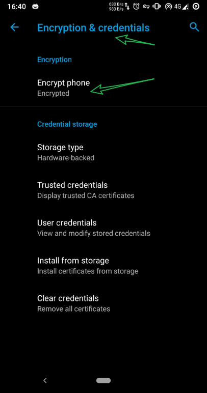
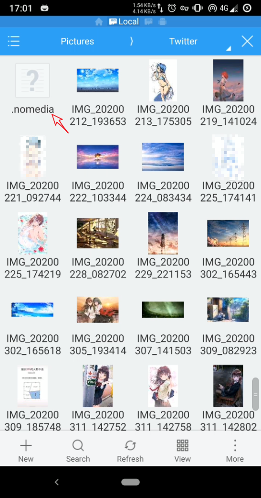
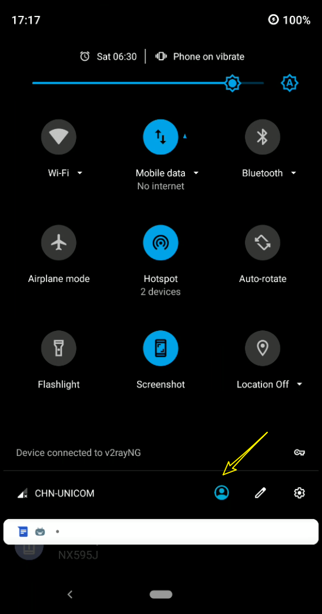
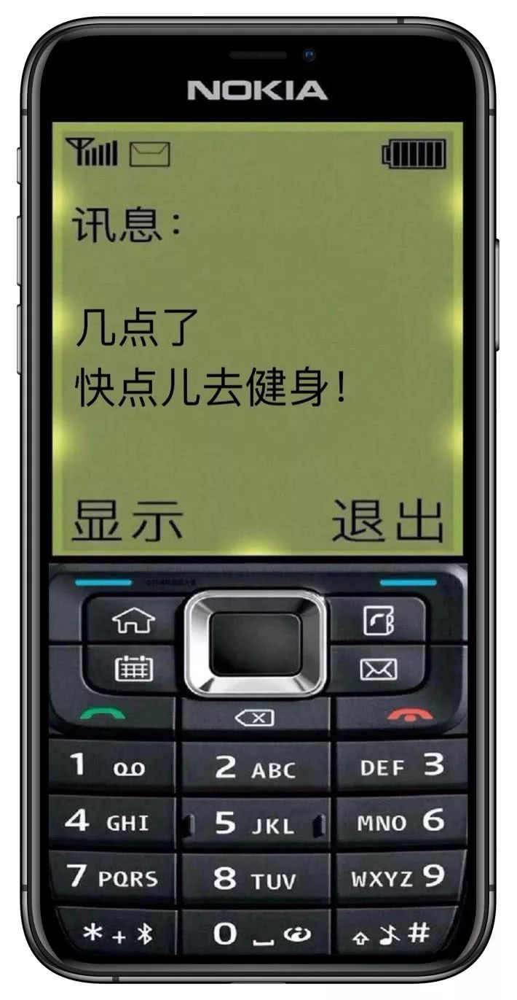

免责声明: 这一篇只是总结我这些年的使用安卓手机的一些经验,并不一定准确.有不足之处,恳请指正
这里演示使用的是 安卓手机, 并且系统是魔趣安卓9.0
手机全加密
首先,无论怎样,首先第一件事: 加密你的手机
我不知道第三方的安卓手机厂商,有没有启用安卓系统的加密功能.但是,建议检查一下,并开启.
魔趣默认没有开启加密.
开启加密的好处
开机必须用
键盘密码解锁,无法使用指纹解锁
(这个好处就不需要说明了吧,睡觉前重启一下手机.就算女朋友趁你睡了用你的手来解锁,也没用)在不知道密码的情况下,无法通过第三方recovery来获取手机的数据
(手机丢了,数据别人也看不到)
加密的坏处:
- 在开机后未解锁,无法正常使用SIM卡,闹钟无法工作
- 如果要升级系统,可能需要先解密DATA分区,要求你的第三方recovery必须具备解密功能
- 一堆莫名奇妙的bugs. (因为我是用的魔趣社区的包,老实说,稳定性欠佳)
- 开机速度会有一点慢.但是进入系统后,跟普通使用场景并无二样(个人体验)
- 开启加密后,是不可逆的. 意味着,手机无法再回到加密前的状态
尽管开启加密有很多小毛病,但是我还是要使用加密的功能.单单安全这个因素,缺陷我可以视而不见.
一般在 setting 里面, 有个 encryption 的选项,按照提示操作就行,确保手机电量充足

隐藏图库某些图片
这个就不需要我说明了,谁也不想打开图库,有一堆不想让别人看见的相片.
我一直有一个观点: 看一个人的电脑桌面,和一个人的手机图库. 就能大概知道他/她是一个什么样的人. 所以我平时桌面图标都是隐藏的,只有一张壁纸.

说了一些废话,下面就说说怎么隐藏你手机图库的图片
看到上图, 里面有一个 .nomedia 的文件
没错,如果你的这个文件夹里面的图片不想出现在图库里,添上这一个文件即可.这个文件的作用是告知系统,不需要扫描这个文件夹下的文件,没扫描到,自然不会出现在图库里
手机多开用户
说这个功能之前,先看下面的图片,虽然可能有些双标的意思,但是你能了解到多用户是很有用的
现在安卓的多用户功能基本是标配. 魔趣的多用户,用起来没有上图说的那么方便(不知国内其他ROM厂商优化情况是怎样)
这个功能我也不怎么用,因为两个账号肯定会多占用更多的硬件资源,管理起来更麻烦,而且我也没有搞清楚它具体的原理,哪些权限是共用的? 不要因为有多账户,就开一个用户给他人用你的手机,这个是很危险的!
下图是增加用户的方法

百度云手机
百度最近发布了一项新的云服务,具体报道如下
https://tech.sina.com.cn/i/2020-04-15/doc-iircuyvh7940769.shtml
简单理解: 就是你在云上多了一台手机
官网地址:
我看了一下,申请试用的网页都打不开,还需要备案,国内传统陋习. 我就告辞了,有需要自己去研究,应该不难.
只要百度不倒闭,你钱包资金充足,这完全是个优秀的解决方案
防窥膜
在朋友的苹果机上见过,防偷窥效果相当出色,只有在特定的角度能看清楚屏幕,显示效果也可以接受. 在其他角度,完全是黑麻麻一片.但是这个方案我也没用过,我喜欢裸奔…
物理隔离(多个设备)
我觉得更好的方法是,不同的设备做不同的事.
譬如Ipad来娱乐, 手机用来微信, PC用于日常事务处理.甚至你可以整一个诺基亚,专门用来短信电话,你懂我意思不?

手机里面内置了一堆的传感器,相比于PC,毫无安全性可言. 有一条就是针对微信步数来的.
かのじょ: 大晚上的,干嘛去了?(说要早睡，结果微信步数蹭蹭上涨，不是梦游就是你绿了)
如今的很多人,所有的事情都交给手机,无论是获取资讯,还是沟通交流,甚至编辑excel.我是很佩服最后一种,在一小块屏幕里指指点点,居然能忍受得了.
如果使用PC,你能使用得骚操作就多了. 隐私窗口,虚拟机,文件隐藏. 有能力的整个Ubuntu,一般女生哪里能操作?
使用匿名通讯软件
骚年,你可知道 telegram snapchat 这类加密,阅后即焚软件?
什么,你说无法访问? 你的姿势水平还不够高啊

后记
好,废话说了怎么多,那问题来了,女朋友去哪里领?
写这篇的目的,只是图大家一个欢乐而已,同时希望各位的安全意识能够提高一点. 还有其他的招,像查看美团,支付宝,滴滴的记录. 这里,有多个账号的优势就体现出来了. 但是,我要说但是了,作为一名绅士,你出门不带个钱包吗?你钱包没有现金的吗? 现金相比其他电子货币,更具有隐蔽性,不容易追踪.流通性还是最好的.
你们要明白,想查看你手机的人,不仅有 かのじょ , 还有无处不在的 Big Brother
安全与便利不可兼得,一味图便利,根本毫无安全可言